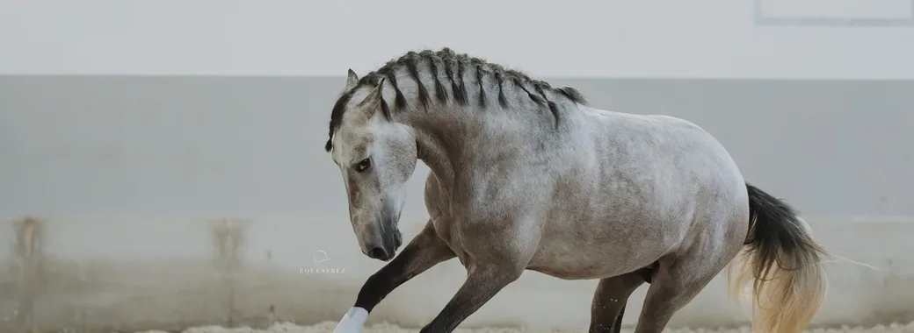

Assento I · 1901
A Fundação da Estirpe pelo Dr. Ruy d'Andrade
A Recuperação Erudita do Cavalo de Sela Barroco
O Dr. Ruy D’Andrade, zoólogo, paleontólogo, anatomista e criador de prestígio universal, deu início em 1901 a um dos mais rigorosos e inovadores programas de conservação zootécnica da história equina europeia. O seu desígnio residia em resgatar a integridade ancestral do lendário Cavalo Peninsular de sela, recuperando as proporções, a elasticidade e a nobreza que as vicissitudes dos séculos anteriores haviam dispersado.
Com base em éguas criteriosamente selecionadas e no influente garanhão Príncipe VIII, Ruy d'Andrade fixou as linhas que dariam origem a uma das mais emblemáticas famílias do Cavalo Lusitano moderno.
